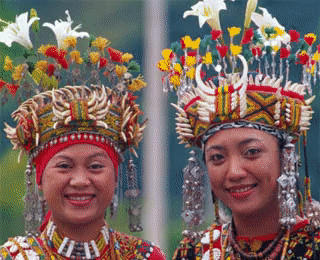
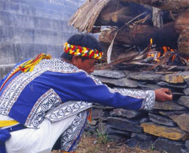
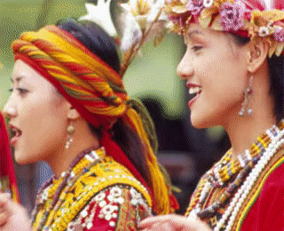
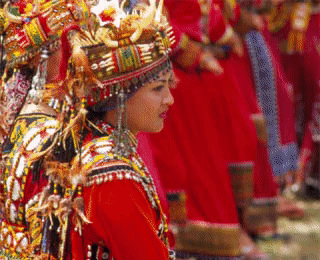

魯凱族分貴族與平民階級，而貴族擁有所有資源以及服飾裝飾權，魯凱族的藝術成就相當高，其中又以編織及木雕最出色，百步蛇與百合是重要象徵。

魯凱族人口約一萬人，分布於屏東縣霧臺鄉與臺東縣卑南鄉等中央山脈南段東西兩側的山區中，依照其地理分佈、社會文化習俗的差異、起源神話與遷移傳說、以及歷史語言學的論通常將其分為三群：以大南社（Taromaku）為主的大南群（又稱東魯凱群），分佈於臺東市大南溪上游卑南鄉境內之山地；以好茶社（kochoapokan）、霧臺社（budai）為中心的隘寮群（又稱西魯凱群），分佈於屏東縣霧臺鄉境隘寮溪上游之山地；以及分佈於高雄縣茂林鄉荖濃溪支流濁口溪流域的三個社（多納、茂林、萬山），稱濁口群（或稱下三社群）。魯凱族自古以來便與環伺四周的排灣族、卑南族、布農族有著錯綜複雜的關係。其中特別是與排灣族因混居、通婚，而呈現外形上十分接近的文化表現。然而魯凱族人仍以語言、繼嗣制度和與百合相關之象徵文化體系維持彼此的區隔。
魯凱族的社會組織以貴族與平民兩個階級為主軸，貴族擁有所有資源與服飾裝飾權等，以往平民必須向貴族綟納稅租或禮物，才能取得使用土地、溪流或服飾裝飾權等權利。魯凱族人相信他們的貴族曾被百步蛇救難，因此將百步蛇圖案視為救恩的象徵，非常重視百步蛇圖案。在魯凱族家屋中的祖靈柱、屋簷、門扉及服飾，都有豐富的百步蛇圖案。魯凱族的藝術成就，在臺灣南島語中相當有名，其中又以女性的編織與男性的木雕最細緻、出色。一位傑出的木雕師父，在部落中往往受到高度的尊重和禮遇。
傳統魯凱族人的信仰是典型的「泛靈信仰」，他們不似其他鄰近族群發展出具文化意義的祭儀，然其生命儀禮均有一定社會規範。

傳統魯凱族人的信仰是典型的「泛靈信仰」（animism），其精靈世界分為五類：可掌握農作物與獵物收穫的神靈；擬人化、有喜怒哀樂等情緒個性司掌人世界禍福的神靈；兇死者之精靈；凡人死後的亡靈；以及萬物各類精靈。一般而言，魯凱族人不似其他鄰近族群發展出具核心文化意義的年中祭儀，如排灣族的五年祭或布農族的打耳祭等，然其生命儀禮，如生育與命名、成年禮、婚禮與桑葬儀式等，均有一定社會規範，較諸前者，社會性大於宗教性、祈福意味濃，亦可供外人一窺其歌舞的內涵。
魯凱族的音樂，分為單音性與多音性兩種。單音性主要是獨唱時唱的；多音性的歌謠幾乎全部以持續低音來唱。

魯凱族音樂可分為單音性與多音性兩種。單音性主要是獨唱時唱的，也有齊唱與領唱和腔的情形。多音性的歌謠幾乎全部以持續低音（drone bass）來唱，通常分成兩部，上聲部是以獨唱擔任旋律，下聲部是以合唱唱出持續低音。多音性的唱法可從其「戀愛歌」、「結婚歌」看出，其和音的形成不論協不協和，以大二度和音為最普遍，單旋律的歌謠唱法也很多，例如「向男人們招呼之歌」、「田裡工作疲倦時之歌」、「婚禮飲酒歌」、「婚禮之歌」、「信號的么喚聲」、「哭泣之歌」、「鬼湖之戀」等歌曲。
小鬼湖之戀 (杜安琪、賴聖偉演唱)小鬼湖之戀是魯凱族著名的單旋律歌謠。
對魯凱族人而言，舞蹈是一種社會性禮儀，男性以山豬牙裝飾代表善獵，獵過許多山豬者，則頭上飾以百合花，階級愈高服裝愈華麗。

根據過去的文獻，魯凱族人以收穫祭與狩獵祭為最重要的年中祭儀，也是男女集體舞蹈、或出草凱旋而的歸的男性以歌舞誇耀戰功的場合。今日魯凱族的傳統祭儀雖然較為式微，但是在適當的社會集會場合中，仍可看到族人盛裝參與歌舞的情景。對魯凱族人而言，舞蹈是一種社會性禮儀，男性以山豬牙裝飾，以代表善獵，獵過許多山豬者，則頭上飾以百合花。一般而言，階級愈高服裝愈華麗，貴族能性才能穿戴羽毛頭飾；而女性頭上往往佩帶百合花以示貞潔。未婚女子，必須盛裝由母親或祖母陪同參加歌舞。而長輩在歌舞過程中會一直注意她們服裝的整齊與禮節的莊重。
舞蹈主要是未婚男女的活動，從舞蹈的隊形看來，並無年齡階級之分，貴族也不因其身份而有特別位置；但另一方面，隊形上可看出男女有別：未婚男子站在前方，女子接於其後。已婚男女則無此約束，只要依照男右女左的慣例穿插排隊即可。在男女分別排列的隊形時，通常是男性圍圈在外、女性在內。魯凱族人自我的解釋是，這是因為在魯凱族社會男性要擔當保護女性的責任。
從動作上而言，以四步舞為基本隊形，女子著重身體的端莊。身體動作幅度較輕微，甚至以衣裙不得揚起為標準；男性舞步移動幅度較大。分圈而舞時，連歌聲都有分別，女性歌聲緩慢悠揚；而男性歌聲精神昂揚。總之，魯凱族人的舞蹈具有明顯的社會意義，一方面著重男女性別界限，一方面長輩不忘在旁指點鼓勵青年注重儀態與大方氣質之表現。
收穫祭歌舞 (大南部落)對魯凱族人而言，舞蹈是一種社會性禮儀，男性以山豬牙裝飾代表善獵，獵過許多山豬者，則頭上飾以百合花，階級愈高服裝愈華麗。